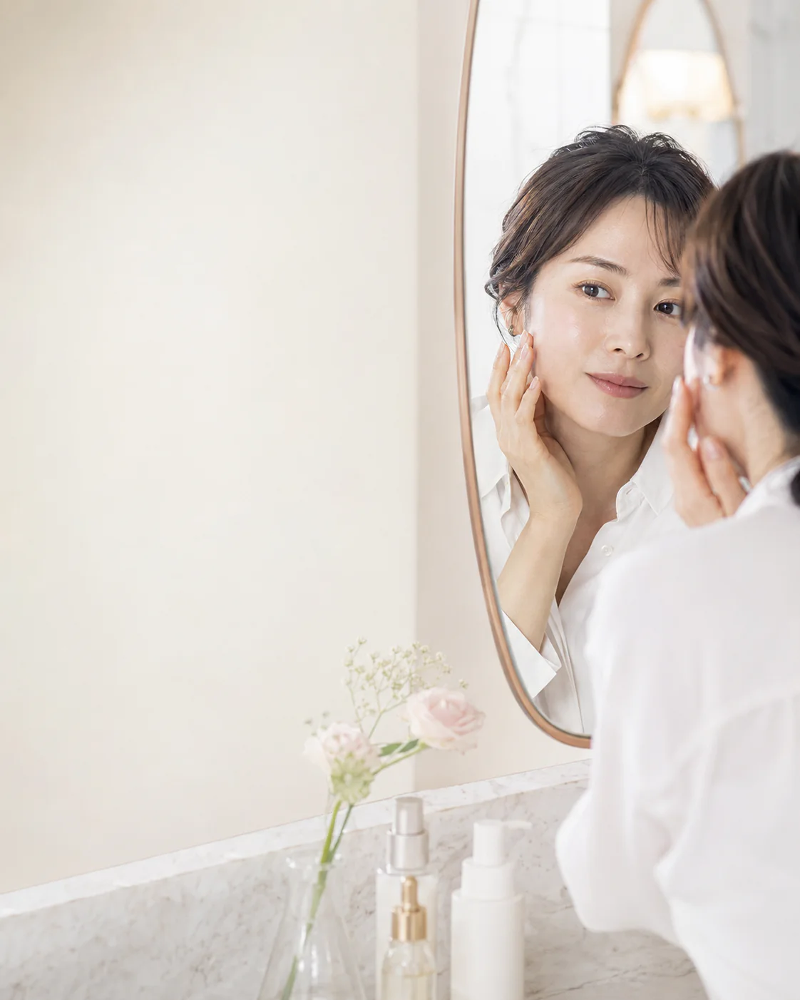
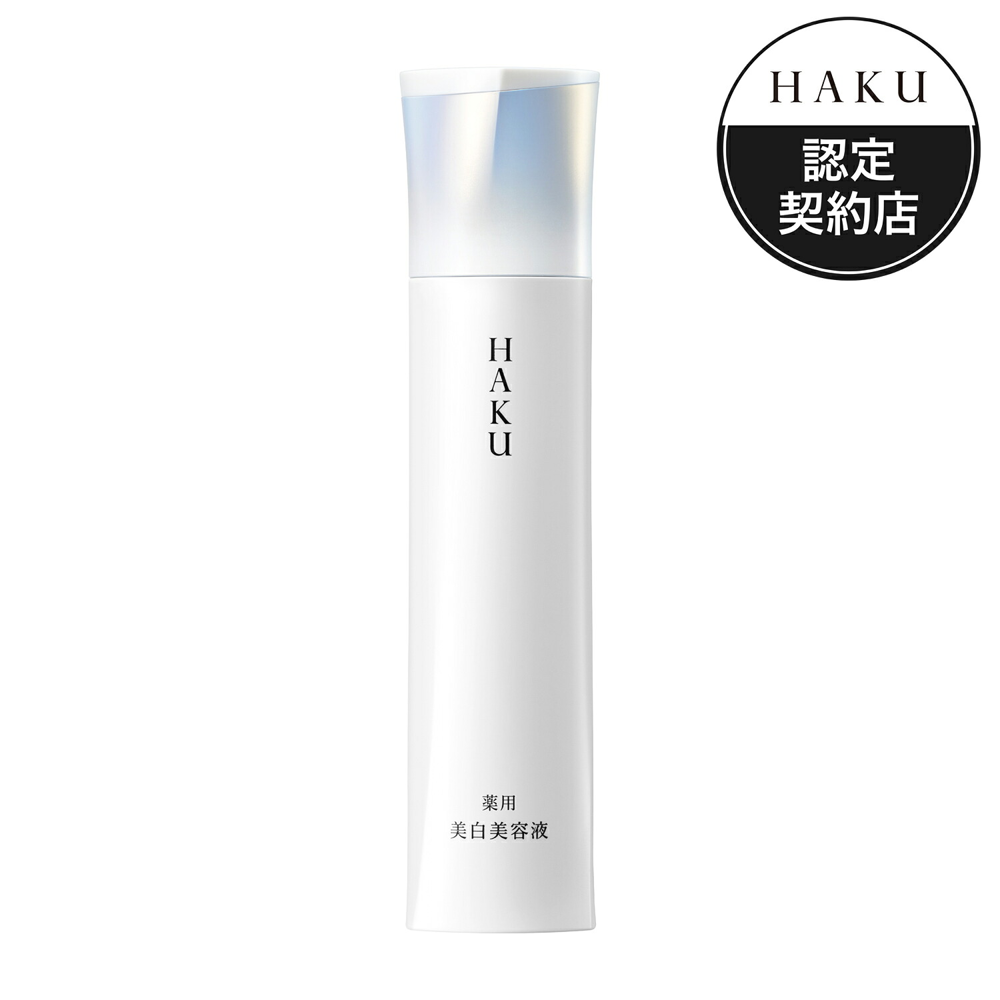
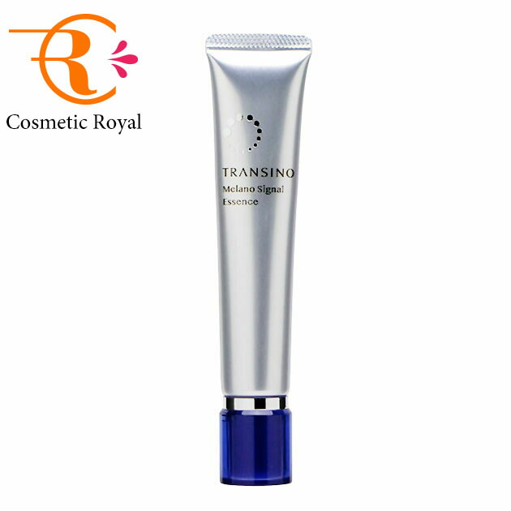
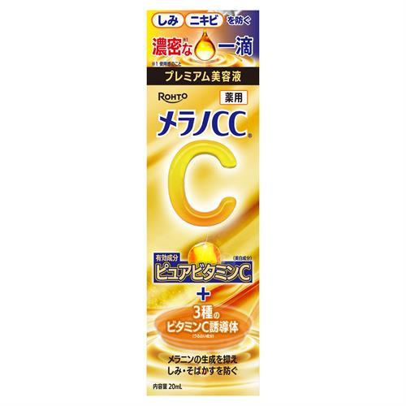
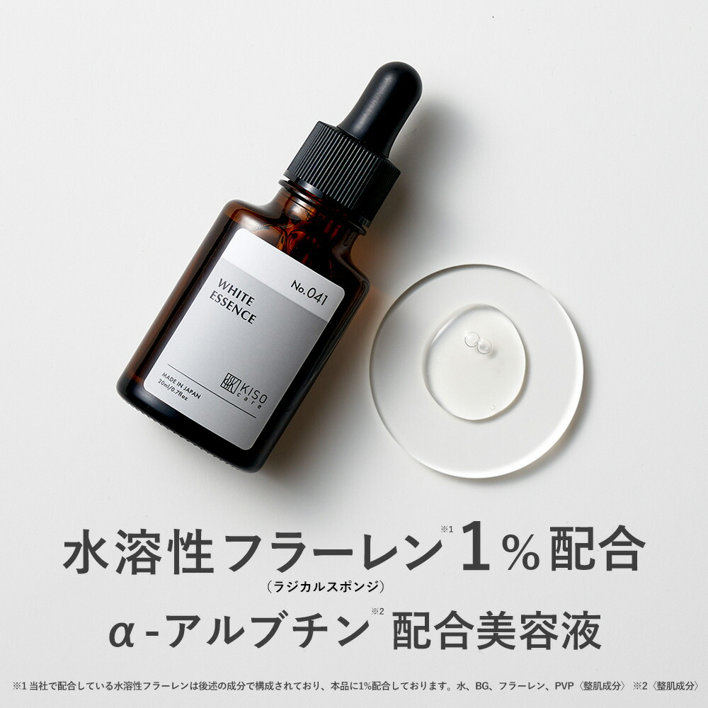
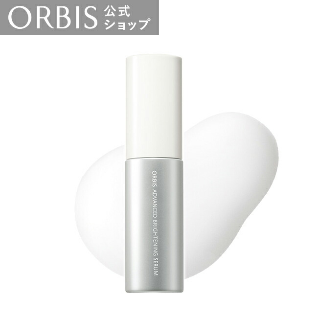

薬用美白から選ぶ
承認された効能と有効成分を公式情報で確認します。
BRIGHTENING SERUM EDIT
薬用美白美容液と、乾燥によるくすみに使う化粧品を分けて比較。美白は「メラニンの生成を抑え、シミ・そばかすを防ぐ」効能です。

HOW TO CHOOSE
シミ・くすみ対策は、目的を分けると選びやすくなります。
承認された効能と有効成分を公式情報で確認します。
うるおい不足による暗い印象には、保湿設計を重視します。
朝晩の使い方、容量、価格まで見て無理なく続く1本へ。
SKIN CONCERN
シミ予防と乾燥によるくすみは、選ぶ成分も目的も異なります。気になる部分を正しく分けて、必要なケアを見極めます。
今の肌を知ることが、選び方の第一歩です。AFTER THE EDIT
薬用美白と保湿美容液を混同せず、公式表示をもとに比較。毎日のケアに取り入れやすい選択肢を整理しました。
鏡を見るたび、前向きになれる肌印象へ。QUICK COMPARISON
| 商品 | 容量 | 参考価格 | タイプ | 選び方 |
|---|---|---|---|---|
| HAKU メラノフォーカスIV | 45g | 販売ページで確認 | 医薬部外品 | 薬用美白を本格的に続けたい |
| トランシーノ 薬用メラノシグナルエッセンス | 30g | 販売ページで確認 | 医薬部外品 | トラネキサム酸で選びたい |
| メラノCC 薬用しみ集中対策プレミアム美容液 | 20mL | 販売ページで確認 | 医薬部外品 | 滴下式の薬用美容液がいい |
| KISO ホワイトエッセンス VCRS | 20mL | 販売ページで確認 | 化粧品 | 乾燥くすみを成分で選びたい |
| オルビス アドバンスド ブライトニング セラム | 36mL | 販売ページで確認 | 医薬部外品 | 無香料・弱酸性で選びたい |
PRODUCT NOTES

2種の美白有効成分を配合。朝晩、化粧水の後に使う美容液です。

美白・肌荒れ防止有効成分トラネキサム酸と、グリチルリチン酸2Kを配合しています。

美白有効成分の活性型ビタミンCを配合。顔全体または気になる部分になじませます。

水溶性フラーレン、α-アルブチン、ビタミンC誘導体を配合。薬用美白美容液ではありません。

美白有効成分デクスパンテノールWを配合。化粧水の後、保湿液の前に使います。